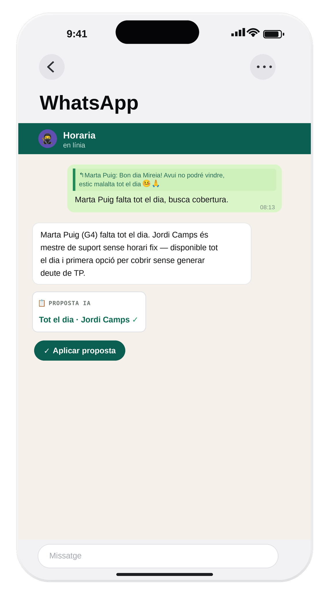
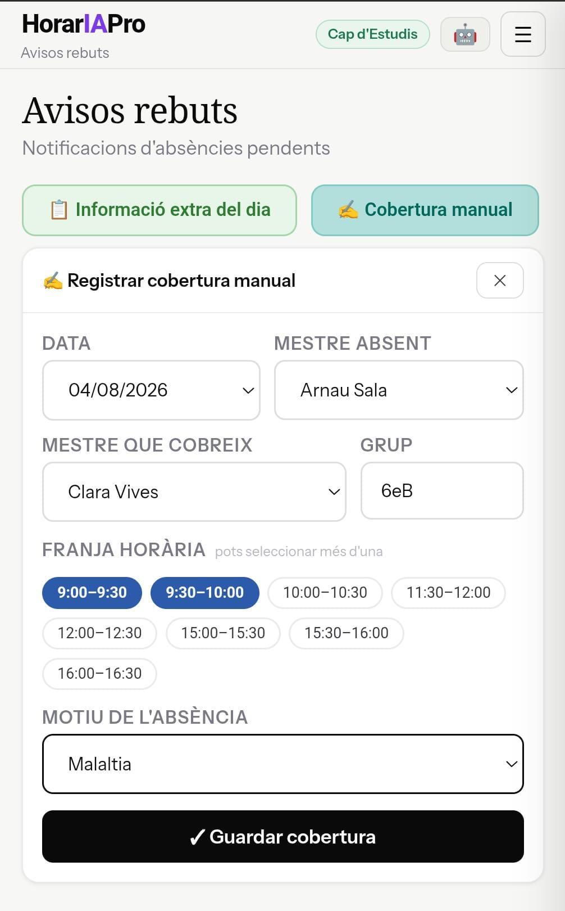

HorarIAPro automatitza la proposta de cobertures del professorat amb IA, notifica tothom afectat i elimina el caos de les substitucions.
✓ Ja en marxa a 2 centres educatius
Prova l'aplicació real aquí baix — pas a pas, des de l'avís del docent fins a la confirmació per correu dels canvis d'horari als afectats. El mateix producte que ja fan servir els centres, amb dades fictícies.
⏱️ Comprova tu mateix quant de temps passa des de l'avís fins a la confirmació i gestió finalitzada, amb el cronòmetre de dalt a l'esquerra.
📱 En mòbil, toca ⛶ per veure-la en pantalla completa, o obri-la en una pestanya nova →
Una sola eina per a tota la gestió d'absències, cobertures i horaris de tot el claustre.
Senzill i ràpid — els docents ho adopten sense formació. Centralitza tots els avisos (WhatsApp, email, trucades) en un sol canal per a la cap d'estudis.

Per WhatsApp
ManualmentLa visió exacta que necessita la cap d'estudis a primera hora del matí: tots els grups, totes les franges, d'un cop d'ull. Veus immediatament quins grups queden sense cobrir.
La IA fa el 90% de la feina intel·lectual. Analitza horaris, deutes de TP i normes del centre per proposar qui cobreix cada franja. El 10% restant és la teva confirmació.
L'assistent expert en cobertures. Explica-li qui s'absenta i la IA raona en veu alta: consulta els horaris, comprova els deutes de TP i proposa qui cobreix cada franja.
Classificació per criteris ATRI. Genera registre automàtic mensual i anual en format visual o Excel per a la PGA, presa de decisions i inspeccions.
Horari online del substitut, modificable fàcilment per la cap d'estudis. El personal té sempre la versió actualitzada a l'instant, des de qualsevol dispositiu.
Tant la cap d'estudis com cada docent tenen control total sobre el Treball Personal acumulat. HorarIA el té en compte per repartir cobertures de forma equitativa.
Centralitza tots els horaris del centre. La cap d'estudis els edita i el personal accedeix sempre a la versió més actual, sense imprimir res ni enviar correus.
Genera automàticament els horaris compactats per a les jornades intensives d'inici i fi de curs, sense haver-ho de recalcular manualment.
Organitza qui acompanya una sortida i gestiona automàticament les cobertures dels mestres que aquella sortida genera al centre.
Cada docent veu els seus torns de pati de la setmana des del mòbil, amb el d'avui destacat. La cap d'estudis configura l'assignació setmanal en un sol lloc.
Rep l'avís, consulta la proposta de la IA i confirma la cobertura en dos clics. HorariaPro fa la feina administrativa perquè tu et puguis centrar en el pedagògic.
Director/a i secretaria tenen accés als informes d'absències, el registre de cobertures i els deutes de TP de tot el claustre.
Sense trucades, sense paper, sense esperar. El docent selecciona les franges, el motiu i envia. Punt.
Sense permanència · Suport directe inclòs · Cancel·la quan vulguis.
Ideal per a la gestió pressupostària del centre: una sola factura anual i 2 mesos de franc.
Si en tens més, escriu-nos — responem en menys de 24h.
No. Funciona 100% al navegador, des de mòbil, tauleta o ordinador. Ni la cap d'estudis ni el professorat han d'instal·lar res.
Cada docent entra amb el seu correu XTEC o corporatiu del centre (si en teniu). Sense comptes externs ni contrasenyes innecessàries.
Tens dret a l'oblit: pots sol·licitar l'eliminació completa de totes les dades del centre en qualsevol moment.
A servidors europeus (EU-West), seguint el RGPD i el reglament del Departament d'Educació. Cap dada surt de la Unió Europea.
Entre uns dies i una setmana com a màxim, depenent de la mida del claustre (docents, educadors i altre personal). La implantació és gratuïta i inclou suport directe per configurar horaris i normes de cobertura.
Sí. HorariaPro funciona de manera complementària a l'ecosistema de Google Workspace for Education (Gmail, Calendar) que ja fan servir la majoria de centres: les notificacions arriben directament al vostre correu, sense duplicar informació ni canviar cap altra eina.
Analitza horaris disponibles i deutes de Treball Personal (TP) acumulats, combinant-ho amb les normes de cobertura i el context personalitzat que cada centre defineix per a la IA — sempre repartint les cobertures de manera equitativa.
La cap d'estudis pot editar-la abans de confirmar-la — és una proposta, no una decisió automàtica. A més, amb el Chat Horaria pots conversar directament amb la IA per afinar-la o corregir-la ("i si en Carles no pot?"), d'una manera senzilla i intuïtiva.
No. Sense permanència, sense cost d'implantació, i es pot cancel·lar quan es vulgui.
Funciona per a qualsevol centre educatiu, sigui quin sigui el nivell: escoles d'educació infantil, CEIP o instituts.
Les dades dels teus docents estan protegides i gestionades d'acord amb la normativa europea de protecció de dades.
Tota la informació s'emmagatzema a servidors europeus (EU-West). Cap dada surt de la Unió Europea.
Cada docent accedeix amb el seu PIN personal. Cap contrasenya, cap compte d'usuari extern necessari.
Les dades de cada escola estan completament separades. Cap centre pot accedir a la informació d'un altre.
Només es recullen les dades estrictament necessàries: nom, horari i correu electrònic dels docents.
Qualsevol centre pot sol·licitar l'eliminació completa de les seves dades en qualsevol moment.
Totes les comunicacions van per HTTPS. Les dades en repòs estan xifrades a la base de dades.
Escriu-me i t'explico com adaptar l'app al teu centre. La implantació és gratuïta i el suport és directe.